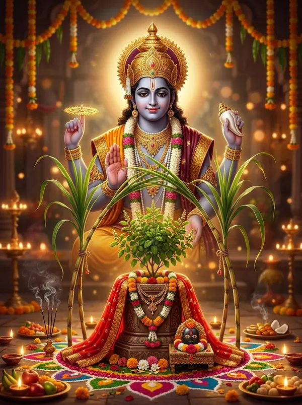

पाठ संग्रह
165 पाठ — हर पंक्ति के सरल हिंदी अर्थ के साथ। पूजा के समय फ़ोन पर बड़े अक्षरों में पढ़ें या प्रिंट करें। हर हफ़्ते नए पाठ जुड़ते हैं।

किसका पाठ करना है?
चालीसा
 हनुमान चालीसा40 चौपाई, अर्थ सहित
हनुमान चालीसा40 चौपाई, अर्थ सहित दुर्गा चालीसा40 चौपाई, अर्थ सहित
दुर्गा चालीसा40 चौपाई, अर्थ सहित शिव चालीसा40 चौपाई, अर्थ सहित
शिव चालीसा40 चौपाई, अर्थ सहित गणेश चालीसागणेश जन्म कथा सहित
गणेश चालीसागणेश जन्म कथा सहित लक्ष्मी चालीसाधन-समृद्धि, अर्थ सहित
लक्ष्मी चालीसाधन-समृद्धि, अर्थ सहित शनि चालीसाशनिवार का पाठ, अर्थ सहित
शनि चालीसाशनिवार का पाठ, अर्थ सहित कृष्ण चालीसाश्रीकृष्ण लीला, अर्थ सहित
कृष्ण चालीसाश्रीकृष्ण लीला, अर्थ सहित राम चालीसाएक श्लोकी रामायण सहित
राम चालीसाएक श्लोकी रामायण सहित विष्णु चालीसादशावतार, अर्थ सहित
विष्णु चालीसादशावतार, अर्थ सहित सरस्वती चालीसाविद्या-बुद्धि, अर्थ सहित
सरस्वती चालीसाविद्या-बुद्धि, अर्थ सहित- गायत्री चालीसाह्रीं श्रीं क्लीं मेधा प्रभा
 सूर्य चालीसा12 नाम और सूर्य कवच सहित
सूर्य चालीसा12 नाम और सूर्य कवच सहित- गंगा चालीसागंगा अवतरण कथा सहित
 पार्वती चालीसाउमा नाम की कथा सहित
पार्वती चालीसाउमा नाम की कथा सहित काली चालीसाजय काली कंकाल मालिनी
काली चालीसाजय काली कंकाल मालिनी भैरव चालीसाकाशी के कोतवाल
भैरव चालीसाकाशी के कोतवाल राधा चालीसाजय वृषभानु कुँवरि श्री श्यामा
राधा चालीसाजय वृषभानु कुँवरि श्री श्यामा अन्नपूर्णा चालीसाकाशी की अन्नदात्री
अन्नपूर्णा चालीसाकाशी की अन्नदात्री- संतोषी माता चालीसाजय सन्तोषी मात अनूपम
- पितर चालीसापितृ पक्ष और श्राद्ध के लिए
आरती
- ॐ जय जगदीश हरेविष्णु आरती, अर्थ सहित
- जय गणेश देवागणेश आरती, अर्थ सहित
 ॐ जय शिव ओंकाराशिव आरती, अर्थ सहित
ॐ जय शिव ओंकाराशिव आरती, अर्थ सहित- जय अम्बे गौरीदुर्गा आरती, अर्थ सहित
- आरती कुंजबिहारी कीश्रीकृष्ण आरती, अर्थ सहित
- आरती कीजै हनुमान लला कीहनुमान आरती, अर्थ सहित
- ॐ जय लक्ष्मी मातालक्ष्मी आरती, अर्थ सहित
- जय जय श्री शनिदेवशनि आरती, अर्थ सहित
- ॐ जय लक्ष्मी रमणासत्यनारायण आरती
- ॐ जय गंगे मातागंगा आरती, अर्थ सहित
- जय सरस्वती मातासरस्वती आरती, अर्थ सहित
- सुखकर्ता दुखहर्तामराठी गणपती आरती संग्रह
- आरती श्री रामायण जी कीरामायण पाठ की आरती

जय जय तुलसी मातातुलसी आरती, अर्थ सहित- ॐ जय कश्यप नन्दनसूर्य आरती, अर्थ सहित
- जय भैरव देवाभैरव आरती, अर्थ सहित
- जय पार्वती मातापार्वती आरती, अर्थ सहित
- बारम्बार प्रणामअन्नपूर्णा आरती
- ॐ जय गंगाधरसंस्कृत शिव आरती
- जय अहोई माताअहोई अष्टमी आरती
- ॐ जय एकादशी मातासभी 26 एकादशी के नाम सहित
 जय वैष्णवी मातावैष्णो देवी आरती
जय वैष्णवी मातावैष्णो देवी आरती- ॐ जय बृहस्पति देवागुरुवार की आरती
- सुन मेरी देवी पर्वतवासनीविन्ध्येश्वरी आरती, अर्थ सहित
- अम्बे तू है जगदम्बे कालीदुर्गा-काली आरती, अर्थ सहित
- शेंदुर लाल चढ़ायोगणेश आरती, अर्थ सहित
- मंगल की सेवा सुन मेरी देवाकाली माता की आरती, अर्थ सहित
- श्री गोवर्धन महाराजगिरिराज जी की आरती, अर्थ सहित
- ॐ जय श्री श्याम हरेखाटू श्याम जी की आरती, अर्थ सहित
 ॐ जय करवा मैयाकरवा चौथ की आरती, अर्थ सहित
ॐ जय करवा मैयाकरवा चौथ की आरती, अर्थ सहित- ॐ जय यक्ष कुबेर हरेकुबेर जी की आरती, अर्थ सहित
- जय धन्वंतरि देवाधन्वंतरि आरती, अर्थ सहित
मंत्र
- गायत्री मंत्रअर्थ और जाप विधि
- महामृत्युंजय मंत्रअर्थ और 108 जाप
- 10 प्रमुख मंत्रगणेश, शिव, विष्णु, दुर्गा…
- ॐ नमः शिवायशिव के प्रमुख मंत्र
- सुबह के मंत्रकराग्रे वसते लक्ष्मी…
- देवताओं के गायत्री मंत्रगणेश से शनि तक 11 मंत्र
- नवग्रह मंत्र9 ग्रहों के बीज मंत्र
- सूर्य के 12 नामसूर्य नमस्कार मंत्र
- भोजन और सोने के मंत्रब्रह्मार्पणं, अन्नपूर्णे…
- हरे कृष्ण महामंत्रऔर श्रीकृष्ण के प्रमुख मंत्र
- दुर्गा मंत्रनवार्ण, या देवी सर्वभूतेषु
- शांति मंत्रॐ पूर्णमदः, असतो मा सद्गमय
- हनुमान मंत्रगायत्री, मनोजवं, ॐ हं हनुमते नमः
- कुबेर मंत्रधन-धान्य, गायत्री और नाम मंत्र
- धन्वंतरि मंत्रआरोग्य के लिए, अर्थ सहित
- यम दीपदान मंत्रधनतेरस की शाम, विधि सहित
स्तोत्र और स्तुति
- रुद्राष्टकम्तुलसीदास कृत, अर्थ सहित
- निर्वाण षटकम् (शिवोऽहम्)आदि शंकराचार्य कृत
- श्री रामचंद्र कृपालु भजु मनराम स्तुति, अर्थ सहित
- शिव तांडव स्तोत्रम्रावण कृत, अर्थ सहित
- शिव पंचाक्षर स्तोत्रनागेन्द्रहाराय, अर्थ सहित
- लिङ्गाष्टकम्ब्रह्ममुरारि, अर्थ सहित
- अयि गिरिनन्दिनिमहिषासुरमर्दिनि स्तोत्रम्, अर्थ सहित
- मधुराष्टकम्अधरं मधुरं, अर्थ सहित
- संकटमोचन हनुमानाष्टकको नहिं जानत, अर्थ सहित
- संकटनाशन गणेश स्तोत्रगणेश के 12 नाम
- श्री हरि स्तोत्रम्जगज्जालपालं, अर्थ सहित
- दशरथ कृत शनि स्तोत्रशनि पीड़ा शांति
- महालक्ष्मी अष्टकम्इंद्र कृत, अर्थ सहित
- सप्तश्लोकी दुर्गापूरे सप्तशती का सार
- 12 ज्योतिर्लिंग स्तोत्रसौराष्ट्रे सोमनाथं
- कृष्णाष्टकम्भजे व्रजैकमण्डनं
- हनुमान जी के 12 नामद्वादश नाम स्तोत्र
- राम रक्षा स्तोत्रध्यान सहित 38 श्लोक
- आदित्य हृदय स्तोत्रवाल्मीकि रामायण, 31 श्लोक
- देवी क्षमा प्रार्थनाकुपुत्रो जायेत, कुमाता न भवति
- अर्गला स्तोत्ररूपं देहि जयं देहि
- श्री सूक्तॐ हिरण्यवर्णां हरिणीं
- राधा कृपा कटाक्ष स्तोत्रकदा करिष्यसीह मां
- दामोदराष्टकम्कार्तिक मास का पाठ
- शिवाष्टकम्तस्मै नमः परमकारणकारणाय
- गणेश पंचरत्न स्तोत्रमुदाकरात्तमोदकं
- दशावतार स्तोत्रप्रलयपयोधिजले, जयदेव
- ऋणमोचन मंगल स्तोत्रकर्ज़ से मुक्ति का पाठ
- दारिद्र्य दहन शिव स्तोत्रवसिष्ठ रचित
- भवानी अष्टकम्न तातो न माता, अर्थ सहित
- बजरंग बाणनिश्चय प्रेम प्रतीति ते, अर्थ सहित
- श्री हनुमान स्तवनअतुलितबलधामं, अर्थ सहित
व्रत कथा
- करवा चौथ व्रत कथासरल हिंदी में
- अहोई अष्टमी व्रत कथासरल हिंदी में
- सोमवार व्रत कथासरल हिंदी में
- सत्यनारायण व्रत कथासरल हिंदी में
- रमा एकादशी व्रत कथासरल हिंदी में
- पापांकुशा एकादशी व्रत कथासरल हिंदी में
- धनतेरस की कथासरल हिंदी में
- दिवाली की कथासरल हिंदी में
- गोवर्धन पूजा की कथासरल हिंदी में
- भाई दूज की कथासरल हिंदी में
- छठ पूजा की कथासरल हिंदी में
- तुलसी विवाह की कथासरल हिंदी में
- हरियाली तीज की कथासरल हिंदी में
- हरतालिका तीज की कथासरल हिंदी में
- कजरी तीज की कथासरल हिंदी में
- गणगौर की कथासरल हिंदी में
- रक्षा बंधन की कथासरल हिंदी में
- जितिया (जीवित्पुत्रिका) व्रत कथासरल हिंदी में
- हलषष्ठी (ललही छठ) की कथासरल हिंदी में
- बहुला चौथ की कथासरल हिंदी में
- शरद पूर्णिमा व्रत कथासरल हिंदी में
- नरक चतुर्दशी की कथासरल हिंदी में
संत भजन
- पायो जी मैंने राम रतन धन पायोमीराबाई का भजन, अर्थ सहित
- मेरे तो गिरधर गोपालमीराबाई का भजन, अर्थ सहित
- हरि तुम हरो जन की भीरमीराबाई का भजन, अर्थ सहित
- बसो मेरे नैनन में नंदलालमीराबाई का भजन, अर्थ सहित
- मैया मोरी मैं नहिं माखन खायोसूरदास का पद, अर्थ सहित
- सबसे ऊँची प्रेम सगाईसूरदास का पद, अर्थ सहित
- ठुमक चलत रामचंद्रतुलसीदास का भजन, अर्थ सहित
- प्रभु जी तुम चंदन हम पानीसंत रैदास का पद, अर्थ सहित
- वैष्णव जन तो तेने कहियेनरसी मेहता का भजन, अर्थ सहित
- रघुपति राघव राजाराममूल पाठ, अर्थ सहित
- मैं तो साँवरे के रंग राचीमीराबाई का भजन, अर्थ सहित
- पग घुँघरू बाँधि मीरां नाचीमीराबाई का भजन, अर्थ सहित
- स्याम म्हाने चाकर राखो जीमीराबाई का भजन, अर्थ सहित
- माई री मैं तो लियो गोविंदो मोलमीराबाई का भजन, अर्थ सहित
- मन रे परसि हरि के चरणमीराबाई का भजन, अर्थ सहित
- प्रभु मोरे अवगुन चित न धरोसूरदास का भजन, अर्थ सहित
- मैया मोहिं दाऊ बहुत खिझायोसूरदास का भजन, अर्थ सहित
- मैयासूरदास का भजन, अर्थ सहित
- जसोदा हरि पालनैं झुलावैसूरदास का भजन, अर्थ सहित
- ऊधौसूरदास का भजन, अर्थ सहित
- निसिदिन बरसत नैन हमारेसूरदास का भजन, अर्थ सहित
- चरन कमल बंदौं हरि राईसूरदास का भजन, अर्थ सहित
- मो सम कौन कुटिल खल कामीसूरदास का भजन, अर्थ सहित
- अबिगत-गति कछु कहत न आवैसूरदास का भजन, अर्थ सहित
- जाऊँ कहाँ तजि चरन तुम्हारेतुलसीदास का भजन, अर्थ सहित
- अब लौं नसानीतुलसीदास का भजन, अर्थ सहित
- ऐसो को उदार जग माहींतुलसीदास का भजन, अर्थ सहित
- केसवतुलसीदास का भजन, अर्थ सहित
- मन पछितैहै अवसर बीतेतुलसीदास का भजन, अर्थ सहित
- कबहुँक हौं यहि रहनि रहौंगोतुलसीदास का भजन, अर्थ सहित
- मोको कहाँ ढूँढे रे बंदेकबीरदास का भजन, अर्थ सहित
- झीनी झीनी बीनी चदरियाकबीरदास का भजन, अर्थ सहित
- मन लागो मेरो यार फकीरी मेंकबीरदास का भजन, अर्थ सहित
- रहना नहिं देस बिराना हैकबीरदास का भजन, अर्थ सहित
- साधोकबीरदास का भजन, अर्थ सहित
- घूँघट का पट खोल रेकबीरदास का भजन, अर्थ सहित
- माया महा ठगिनी हम जानीकबीरदास का भजन, अर्थ सहित
- भजो रे भैया राम गोविंद हरीकबीरदास का भजन, अर्थ सहित
- ऐसी लाल तुझ बिनु कउनु करैसंत रैदास का भजन, अर्थ सहित
- मानुस हौं तो वही रसखानिरसखान का भजन, अर्थ सहित
- या लकुटी अरु कामरिया पररसखान का भजन, अर्थ सहित
- सेस गनेस महेस दिनेसरसखान का भजन, अर्थ सहित
- मइया चलली कैलाशमाँ दुर्गा बिदाई गीत, अर्थ सहित
मंत्र जाप — 108 बार
एक माला के बराबर जाप, ध्यान के साथ सुनें
 54:06
54:06महामृत्युंजय मंत्र — 108 बार
OmKiran Bhakti
 17:10
17:10ॐ नमः शिवाय — 108 बार
OmKiran Bhakti
 30:50
30:50महालक्ष्मी मंत्र — 108 बार
OmKiran Bhakti
 20:36
20:36चामुंडा माता मंत्र जाप
OmKiran Bhakti
 31:07
31:07या देवी सर्वभूतेषु — 108 जाप
OmKiran Bhakti
 32:25
32:25श्री राम गायत्री मंत्र — 108 बार
OmKiran Bhakti
 36:31
36:31शनि मंत्र — 108 बार
OmKiran Bhakti
 18:42
18:42सूर्य बीज मंत्र
OmKiran Bhakti
 30:37
30:37ॐ साईं नमो नमः — 108 बार
OmKiran Bhakti
अक्सर पूछे जाने वाले सवाल
गणेश जी की कौन-कौन सी आरती हैं?
गणेश जी की तीन सबसे प्रसिद्ध आरतियाँ हैं: ‘जय गणेश जय गणेश देवा’ (पूरे उत्तर भारत में), ‘सुखकर्ता दुखहर्ता वार्ता विघ्नाची’ (महाराष्ट्र की मराठी आरती, समर्थ रामदास कृत) और ‘शेंदुर लाल चढ़ायो’ (महाराष्ट्र)।
माता रानी (दुर्गा माँ) की कौन-कौन सी आरती हैं?
‘जय अम्बे गौरी’ (हर घर और मंदिर में), ‘अम्बे तू है जगदम्बे काली’ (नवरात्रि और चौकी में), ‘मंगल की सेवा सुन मेरी देवा’ (माँ काली की), ‘जय वैष्णवी माता’ (जम्मू, पंजाब, हिमाचल) और ‘सुन मेरी देवी पर्वतवासनी’ (विंध्याचल, उत्तर प्रदेश)।
नवरात्रि में कौन सी आरती गाते हैं?
सुबह-शाम जय अम्बे गौरी, और चौकी-जागरण में अम्बे तू है जगदम्बे काली तथा मंगल की सेवा। साथ में दुर्गा चालीसा का पाठ होता है।
शिव जी की कौन-कौन सी आरती हैं?
‘ॐ जय शिव ओंकारा’ (सबसे प्रचलित) और ‘ॐ जय गंगाधर’। सावन और महाशिवरात्रि पर शिव चालीसा के साथ गाई जाती हैं।
कृष्ण जी की कौन-कौन सी आरती हैं?
‘आरती कुंजबिहारी की’ (जन्माष्टमी और रोज़ की पूजा), ‘श्री गोवर्धन महाराज’ (गोवर्धन पूजा) और ‘ॐ जय श्री श्याम हरे’ (खाटू श्याम जी, राजस्थान)।
लक्ष्मी पूजा और दिवाली पर कौन सी आरती गाएँ?
‘ॐ जय लक्ष्मी माता’, ‘जय गणेश देवा’ और अंत में ‘ॐ जय जगदीश हरे’।
हर पूजा के अंत में कौन सी आरती गाई जाती है?
‘ॐ जय जगदीश हरे’ — भगवान विष्णु की यह आरती लगभग हर पूजा के अंत में गाई जाती है।
हनुमान जी और शनि देव की आरती कौन सी है?
हनुमान जी: ‘आरती कीजै हनुमान लला की’; शनि देव: ‘जय जय श्री शनिदेव’। मंगलवार-शनिवार को गाई जाती हैं।